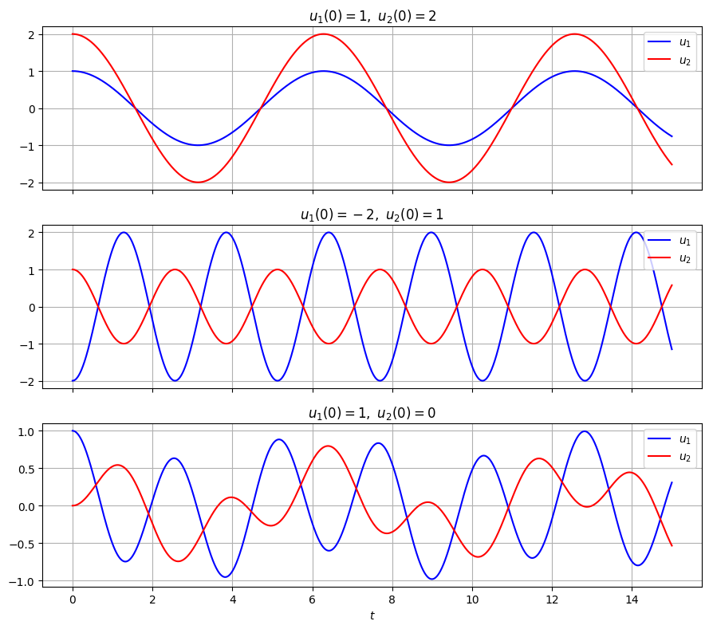
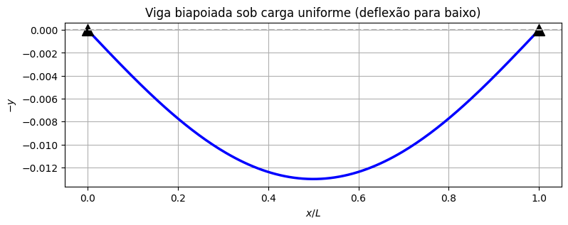

Modelagem com EDOs de Ordem Superior#
Até aqui, toda a teoria de equações lineares foi feita para ordem \(2\) — e por um bom motivo: a segunda lei de Newton traz uma segunda derivada. Mas equações de ordem maior aparecem naturalmente em engenharia, por pelo menos dois caminhos:
quando vários sistemas de segunda ordem estão acoplados (várias massas, várias malhas de um circuito) e eliminamos as variáveis até sobrar uma só;
quando a própria física envolve derivadas mais altas, como na flexão de vigas.
Nesta aula, vamos ver um exemplo de cada tipo e depois estender, quase sem esforço, tudo o que já sabemos para a equação linear de ordem \(n\) com coeficientes constantes:
Duas massas acopladas#
Considere duas massas unitárias penduradas em série: a primeira presa ao teto por uma mola de constante \(k_1=3\), e a segunda presa à primeira por uma mola de constante \(k_2=2\), sem amortecimento. Sejam \(u_1(t)\) e \(u_2(t)\) os deslocamentos de cada massa a partir do equilíbrio.
Aplicando a segunda lei de Newton a cada massa, com a lei de Hooke em cada mola (a mola do meio é esticada de \(u_2-u_1\)):
São duas equações de segunda ordem acopladas: cada uma envolve as duas incógnitas. Podemos eliminar \(u_2\): da primeira equação, \(u_2=\tfrac12(u_1''+5u_1)\), e portanto \(u_2''=\tfrac12(u_1^{(4)}+5u_1'')\). Substituindo na segunda equação:
Uma única equação, agora de quarta ordem. De modo geral, eliminar variáveis de um sistema com \(N\) massas leva a uma equação de ordem \(2N\).
Vamos simular o sistema numericamente para três escolhas de condições iniciais (todas partindo do repouso):
import numpy as np
import matplotlib.pyplot as plt
from scipy.integrate import odeint
def duas_massas(estado, t):
u1, v1, u2, v2 = estado
return [v1, -5*u1 + 2*u2, v2, 2*u1 - 2*u2]
t = np.linspace(0, 15, 1500)
casos = [
("$u_1(0)=1,\\ u_2(0)=2$", [1, 0, 2, 0]),
("$u_1(0)=-2,\\ u_2(0)=1$", [-2, 0, 1, 0]),
("$u_1(0)=1,\\ u_2(0)=0$", [1, 0, 0, 0]),
]
fig, axs = plt.subplots(3, 1, figsize=(9, 8), sharex=True)
for ax, (titulo, ci) in zip(axs, casos):
sol = odeint(duas_massas, ci, t)
ax.plot(t, sol[:, 0], 'b', label='$u_1$')
ax.plot(t, sol[:, 2], 'r', label='$u_2$')
ax.set_title(titulo)
ax.grid(True)
ax.legend(loc='upper right')
axs[-1].set_xlabel("$t$")
plt.tight_layout()
plt.show()

Repare nos três comportamentos:
No primeiro caso, as duas massas oscilam em fase, com uma única frequência (lenta), e \(u_2\) sempre o dobro de \(u_1\).
No segundo caso, oscilam em oposição de fase, com outra frequência (mais rápida).
No terceiro caso, o movimento parece irregular — mas é apenas uma superposição dos dois movimentos anteriores.
Esses dois movimentos «puros» são chamados de modos normais de vibração, e suas frequências não são arbitrárias: elas saem das raízes da equação característica de \(u_1^{(4)}+7u_1''+6u_1=0\), que é \(r^4+7r^2+6=(r^2+1)(r^2+6)=0\). As raízes \(r=\pm i\) e \(r=\pm i\sqrt6\) dão exatamente as frequências \(1\) e \(\sqrt6\) dos dois modos. Vamos entender por quê na próxima seção. (E, no capítulo de sistemas, vamos aprender a tratar esse problema diretamente como sistema, sem eliminar variáveis.)
Flexão de uma viga#
Na resistência dos materiais, a deflexão \(y(x)\) de uma viga horizontal sob uma carga distribuída \(q(x)\) (força por unidade de comprimento) é descrita pela equação de Euler–Bernoulli:
em que \(E\) é o módulo de elasticidade do material e \(I\) é o momento de inércia da seção transversal (o produto \(EI\) mede a rigidez da viga à flexão). Aqui a variável independente é a posição \(x\) ao longo da viga, e não o tempo — e a derivada de quarta ordem vem direto da física: a carga é a derivada do esforço cortante, que é a derivada do momento fletor, que por sua vez é proporcional à curvatura \(y''\).
Para uma carga uniforme \(q\) constante, basta integrar quatro vezes:
Quatro integrações, quatro constantes. Para uma viga de comprimento \(L\) apoiada nas duas pontas (biapoiada), as condições são \(y(0)=y(L)=0\) (as pontas não descem) e \(y''(0)=y''(L)=0\) (não há momento fletor nos apoios). Repare que, diferente de um PVI, aqui as condições são dadas nas duas extremidades — é um problema de valor de contorno. Resolvendo para as constantes, chega-se a
com deflexão máxima no centro, \(y(L/2)=\dfrac{5qL^4}{384\,EI}\) — uma fórmula clássica de qualquer curso de estruturas. Vamos conferir com o Python:
import sympy as sp
x, L, q, EI = sp.symbols('x L q EI', positive=True)
C1, C2, C3, C4 = sp.symbols('C1:5')
y_geral = q*x**4/(24*EI) + (C1*x**3/6 + C2*x**2/2 + C3*x + C4)/EI
condicoes = [y_geral.subs(x, 0), y_geral.subs(x, L),
sp.diff(y_geral, x, 2).subs(x, 0), sp.diff(y_geral, x, 2).subs(x, L)]
constantes = sp.solve(condicoes, [C1, C2, C3, C4])
y_viga = sp.factor(y_geral.subs(constantes))
print("y(x) =", y_viga)
print("deflexão máxima y(L/2) =", sp.simplify(y_viga.subs(x, L/2)))
xs = np.linspace(0, 1, 200)
ys = xs*(1 - 2*xs**2 + xs**3)/24 # q = EI = L = 1
plt.figure(figsize=(9, 3))
plt.plot(xs, -ys, 'b', linewidth=2.5)
plt.plot([0, 1], [0, 0], 'k^', markersize=12)
plt.axhline(0, color='0.7', linestyle='--')
plt.title("Viga biapoiada sob carga uniforme (deflexão para baixo)")
plt.xlabel("$x/L$"); plt.ylabel("$-y$")
plt.grid(True)
plt.show()
y(x) = q*x*(-L + x)*(-L**2 - L*x + x**2)/(24*EI)
deflexão máxima y(L/2) = 5*L**4*q/(384*EI)

Outros exemplos#
Equações de ordem superior também aparecem em circuitos com várias malhas (cada malha contribui com uma equação de segunda ordem, e eliminar as correntes leva a ordens maiores), em filtros elétricos (um filtro «de ordem \(n\)» é literalmente descrito por uma EDO de ordem \(n\)) e em sistemas de controle, em que o controlador acrescenta derivadas ou integrais à dinâmica da planta.
O que vem a seguir#
Nas próximas seções, vamos ver que resolver \(a_ny^{(n)}+\cdots+a_0y=F(t)\) é uma extensão quase direta do que já fizemos para ordem \(2\): o chute \(y=e^{rt}\) continua funcionando, e o método dos coeficientes a determinar também. A única novidade real é que agora as raízes podem se repetir mais de duas vezes.